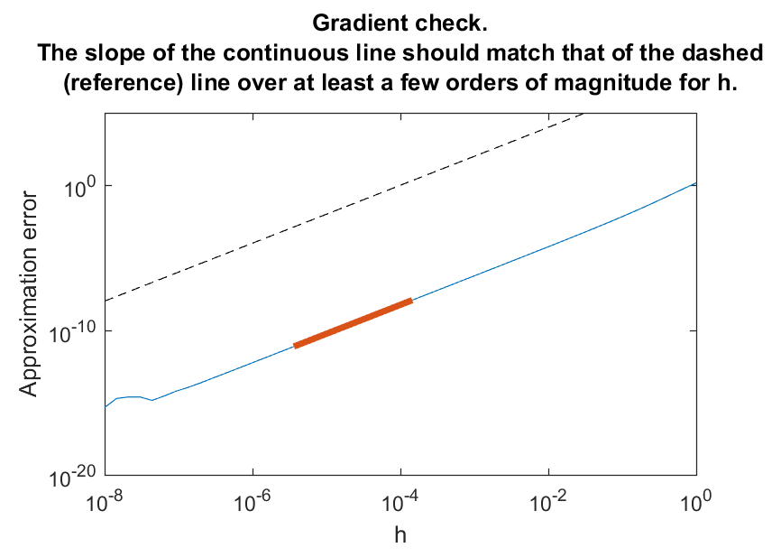
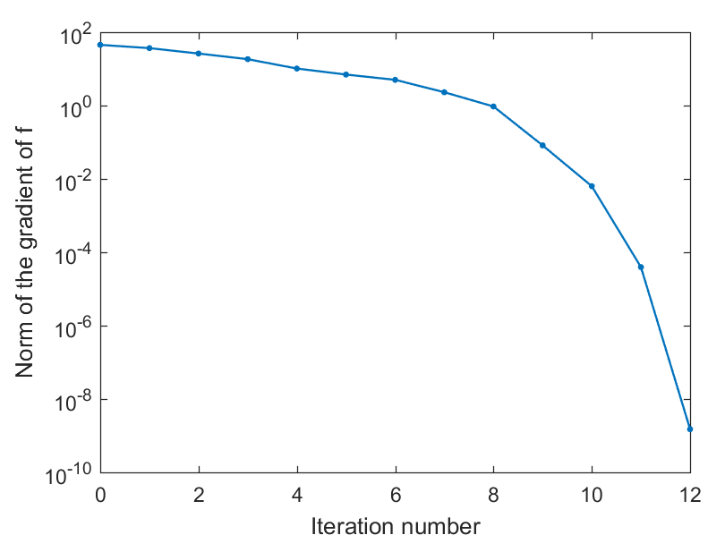

With Manopt, you can solve optimization problems on manifolds using state-of-the-art algorithms, with minimal effort. The toolbox targets great flexibility in the problem description and comes with advanced features, such as caching.
The toolbox architecture is based on a separation of the manifolds, the solvers and the problem descriptions. For basic use, one only needs to pick a manifold from the library, describe the cost function (and possible derivatives) on this manifold and pass it on to a solver. Accompanying tools help the user in common tasks such as numerically checking whether the cost function agrees with its derivatives up to the appropriate order etc.
This is a prototyping toolbox, designed based on the idea that the costly part of solving an optimization problem is querying the cost function, and not the inner machinery of the solver. It is also work in progress: feedback and contributions are welcome!
A short blog post gives an informal overview of optimization on manifolds. It may be a good start to get a general feeling. There is also a 5 minute video giving an overview of the general concept.
It helps us to know our users. If you'd like to, please follow this link to be on our user list. Thanks!
Download The current version is 5.0 and was packaged on Sep. YYY, 2018. The file is about 400 Kb.
- Unzip and copy the whole manopt directory you just downloaded in a location of your choice, say, in /my/directory/.
- Go to /my/directory/manopt/ at the Matlab prompt and execute
importmanopt.- You may save this path for your next Matlab sessions (via
savepath).
Go to /my/directory/manopt/checkinstall/ and run the script basicexample.m. If there are no errors, you are done! Otherwise, feel free to contact us.
In this first example, we will compute a dominant eigenvector of a symmetric matrix $A \in \mathbb{R}^{n\times n}$. Let $\lambda_1 \geq \cdots \geq \lambda_n$ be its eigenvalues. The largest eigenvalue, $\lambda_1$, is known to be the optimal value for the following optimization problem:
$$\max\limits_{x\in\mathbb{R}^n, x \neq 0} \frac{x^T A x}{x^T x}.$$
This can be rewritten as follows:
$$\min\limits_{x\in\mathbb{R}^n, \|x\| = 1} -x^T A x.$$
The cost function and its gradient in $\mathbb{R}^n$ read:
$$
\begin{align}
f(x) & = -x^T A x,\\
\nabla f(x) & = -2Ax.
\end{align}
$$
The constraint on the vector $x$ requires that $x$ be of unit 2-norm, that is, $x$ is a point on the sphere (one of the nicest manifolds):
$$\mathbb{S}^{n-1} = \{x \in \mathbb{R}^n : x^Tx = 1\}.$$
This is all the information we need to apply Manopt to our problem.
Users interested in how optimization on manifolds works will be interested in the following too: the cost function is smooth on $\mathbb{S}^{n-1}$. Its Riemannian gradient on $\mathbb{S}^{n-1}$ at $x$ is a tangent vector to the sphere at $x$. It can be computed as the projection from the usual gradient $\nabla f(x)$ to that tangent space using the orthogonal projector $\mathrm{Proj}_x u = (I-xx^T)u$:
$$\mathrm{grad}\,f(x) = \mathrm{Proj}_x \nabla f(x) = -2(I-xx^T)Ax.$$
This is an example of a mathematical relationship between the
Euclidean gradient $\nabla f$, which we often already know how to
compute from calculus courses, and the Riemannian gradient
$\mathrm{grad}\,f$, which is needed for the optimization.
Fortunately, in Manopt the conversion happens behind the scenes
via a function called egrad2rgrad and we only need
to compute $\nabla f$. This
website can help in figuring out a formula for $\nabla f$.
We will solve this simple optimization problem using Manopt to illustrate the most basic usage of the toolbox. For additional theory, see [AMS08], section 4.6.
[AMS08] P.-A. Absil, R. Mahony and R. Sepulchre, Optimization Algorithms on Matrix Manifolds (open access), Princeton University Press, 2008.
Solving this optimization problem using Manopt requires little Matlab code:
% Generate random problem data. n = 1000; A = randn(n); A = .5*(A+A.'); % Create the problem structure. manifold = spherefactory(n); problem.M = manifold; % Define the problem cost function and its Euclidean gradient. problem.cost = @(x) -x'*(A*x); problem.egrad = @(x) -2*A*x; % notice the 'e' in 'egrad' for Euclidean % Numerically check gradient consistency (optional). checkgradient(problem); % Solve. [x, xcost, info, options] = trustregions(problem); % Display some statistics. figure; semilogy([info.iter], [info.gradnorm], '.-');
xlabel('Iteration number');
ylabel('Norm of the gradient of f');
Let us look at the code bit by bit. First, we generate some data for our problem and execute these two lines:
manifold = spherefactory(n); problem.M = manifold;
The call to spherefactory returns a structure
describing the manifold $\mathbb{S}^{n-1}$, i.e., the sphere. This
manifold corresponds to the constraint appearing in our
optimization problem. For other constraints, take a look at the various supported manifolds. The second
instruction creates a structure named problem and
sets the field problem.M to contain the manifold
structure. The problem structure will be populated with everything
a solver could need to know about the problem in order to solve
it, such as the cost function and its gradient:
problem.cost = @(x) -x'*(A*x); problem.egrad = @(x) -2*A*x;
The cost function (to be minimized: Manopt
always minimizes) and its derivatives are specified as
function
handles. Notice how the gradient was specified as the Euclidean
gradient of $f$, i.e., $\nabla f(x) = -2Ax$ in the function egrad
(mind the "e"). The conversion to the Riemannian gradient happens
behind the scene. This is particularly useful when one is working
with a more complicated manifold.
An alternative to the definition of the gradient is to specify
the Riemannian gradient directly, possibly calling Manopt's egrad2rgrad
conversion tool explicitly:
problem.grad = @(x) manifold.egrad2rgrad(x, -2*A*x);
This is useful if an expression for the Riemannian gradient is
known for example, and it is natural to use that explicitly. Mind
the names: problem.grad is to specify the Riemannian
gradient. If you want to specify the Euclidean gradient,
the correct name is problem.egrad, with an "e". For
day to day use, egrad is often the preferred way to
go.
cost egrad
options.tolgradnorm
set to a larger value to allow it to stop earlier.The next instruction is not needed to solve the problem but often helps at the prototyping stage:
checkgradient(problem);
The checkgradient tool verifies numerically that the cost function and its gradient agree up to the appropriate order. See the tools section for more details and more helpful tools offered by Manopt. This tool generates the following figure:

The blue curve seems to have the same slope as the dashed line over a decent segment (highlighted in orange): that's what we want to see (also check the textual output). We now call a solver for our problem:
[x, xcost, info, options] = trustregions(problem);
This instruction calls trustregions on our problem,
without initial guess and without options structure. As a result,
the solver will generate a random initial guess automatically and
resort to the default values for all options. As a general feature
in Manopt, all options are, well, optional. The returned values
are x (usually an approximate local minimizer of the
cost function), xcost (the cost value attained by x),
info (a struct-array containing information about the
successive iterations performed by the solver) and options
(a structure containing all options used and their values: take a
peek to find out what you can parameterize). For more details and
more solvers, see the solvers section.
warning('off',
'manopt:getHessian:approx');. Finally, we access the contents of the struct-array info
to display the convergence plot of our solver:
semilogy([info.iter], [info.gradnorm], '.-');
xlabel('Iteration number');
ylabel('Norm of the gradient of f');
This generates the following figure:

For more information on what data is stored in info,
see the solvers section.
[info.xxx] and not simply info.xxx,
because info is a Manifolds in Manopt are represented as structures and are obtained by calling a factory. Built-in factories are located in /manopt/manifolds. Picking a manifold corresponds to specifying a search space for the decision variables. For the special (but common) case of a submanifold, the manifold represents a constraint on the decision variables (such as the sphere, which constrains vectors to have unit norm). In the case of a quotient manifold, the manifold captures an invariance in the cost function (such as the Grassmann manifold). Typically, points on the manifold as well as tangent vectors are represented by matrices, but they could be represented by structures, cells, etc. They could even be represented by data on a GPU.
Manopt comes with a number of implementations for generically useful manifolds. Of course, manifolds can also be user-defined. The best way to build your own is probably to read the code of some of the standard factories and to adapt what needs to be changed. If you develop an interesting manifold factory and would like to share it, be sure to let us know: we would love to add it to Manopt if it can be of interest to other users!
| Name | Set | Factory |
| Euclidean space (complex) | $\mathbb{R}^{m\times n}$, $\mathbb{C}^{m\times n}$ | euclideanfactory(m, n)euclideancomplexfactory(m, n) |
| Symmetric matrices | $\{ X \in \mathbb{R}^{n\times n} : X = X^T\}^k$ | symmetricfactory(n, k) |
| Skew-symmetric matrices | $\{ X \in \mathbb{R}^{n\times n} : X + X^T = 0\}^k$ | skewsymmetricfactory(n, k) |
| Centered matrices | $\{ X \in \mathbb{R}^{m\times n} : X\mathbf{1}_n = 0_m \}$ | centeredmatrixfactory(m, n) |
| Sphere | $\{X\in\mathbb{R}^{n\times m} : \|X\|_\mathrm{F} = 1\}$ | spherefactory(n, m) |
| Symmetric sphere | $\{X\in\mathbb{R}^{n\times n} : \|X\|_\mathrm{F} = 1, X = X^T\}$ | spheresymmetricfactory(n) |
| Complex sphere | $\{X\in\mathbb{C}^{n\times m} : \|X\|_\mathrm{F} = 1\}$ | spherecomplexfactory(n, m) |
| Oblique manifold | $\{X\in\mathbb{R}^{n\times m} : \|X_{:1}\| = \cdots = \|X_{:m}\| = 1\}$ | obliquefactory(n, m) (To work with
$X\in\mathbb{R}^{m \times n}$ with $m$ unit-norm rows
instead of columns: obliquefactory(n, m, true).) |
| Complex oblique manifold | $\{X\in\mathbb{C}^{n\times m} : \|X_{:1}\| = \cdots = \|X_{:m}\| = 1\}$ | obliquecomplexfactory(n, m) (To work with
unit-norm rows instead of columns: obliquecomplexfactory(n,
m, true).) |
| Complex circle | $\{z\in\mathbb{C}^n : |z_1| = \cdots = |z_n| = 1\}$ | complexcirclefactory(n) |
| Phases of real DFT | $\{z\in\mathbb{C}^n : |z_k| = 1, z_{1+\operatorname{mod}(k, n)} = \bar{z}_{1+\operatorname{mod}(n-k, n)} \ \forall k\}$ | realphasefactory(n) |
| Stiefel manifold | $\{X \in \mathbb{R}^{n \times p} : X^TX = I_p\}^k$ | stiefelfactory(n, p, k) |
| Complex Stiefel manifold | $\{X \in \mathbb{C}^{n \times p} : X^*X = I_p\}^k$ | stiefelcomplexfactory(n, p, k) |
| Generalized Stiefel manifold | $\{X \in \mathbb{R}^{n \times p} : X^TBX = I_p\}$ for some $B \succ 0$ | stiefelgeneralizedfactory(n, p, B) |
| Stiefel manifold, stacked | $\{X \in \mathbb{R}^{md \times k} : (XX^T)_{ii} = I_d\}$ | stiefelstackedfactory(m, d, k) |
| Grassmann manifold | $\{\operatorname{span}(X) : X \in \mathbb{R}^{n \times p}, X^TX = I_p\}^k$ | grassmannfactory(n, p, k) |
| Complex Grassmann manifold | $\{\operatorname{span}(X) : X \in \mathbb{C}^{n \times p}, X^TX = I_p\}^k$ | grassmanncomplexfactory(n, p, k) |
| Generalized Grassmann manifold | $\{\operatorname{span}(X) : X \in \mathbb{R}^{n \times p}, X^TBX = I_p\}$ for some $B \succ 0$ | grassmannfactory(n, p, B) |
| Rotation group | $\{R \in \mathbb{R}^{n \times n} : R^TR = I_n, \det(R) = 1\}^k$ | rotationsfactory(n, k) |
| Special Euclidean group | $\{ (R, t) \in \mathbb{R}^{n \times n} \times \mathbb{R}^n : R^TR = I_n, \det(R) = 1 \}^k$ | specialeuclideanfactory(n, k) |
| Essential manifold | Epipolar constraint between projected points in two perspective views, see Roberto Tron's page | essentialfactory(k, '(un)signed') |
| Fixed-rank | $\{X \in \mathbb{R}^{m \times n} : \operatorname{rank}(X) = k\}$ | fixedrankembeddedfactory(m, n, k) (ref)fixedrankfactory_2factors(m, n, k) (doc)fixedrankfactory_2factors_preconditioned(m, n, k)
(ref)fixedrankfactory_2factors_subspace_projection(m, n, k)
(ref)fixedrankfactory_3factors(m, n, k) (ref)fixedrankMNquotientfactory(m, n, k) (ref) |
| Fixed-rank tensor | Tensors of fixed multilinear rank in Tucker format | fixedrankfactory_tucker_preconditioned |
| Matrices with strictly positive entries | $\{ X \in \mathbb{R}^{m\times n} : X_{ij} > 0 \ \forall i, j\}$ | positivefactory(m, n) |
| Symmetric, positive definite matrices | $\{ X \in \mathbb{R}^{n\times n} : X = X^T, X \succ 0\}^k$ | sympositivedefinitefactory(n) |
| Symmetric positive semidefinite, fixed-rank (complex) | $\{X \in \mathbb{R}^{n \times n} : X = X^T \succeq 0, \operatorname{rank}(X) = k\}$ | symfixedrankYYfactory(n, k)symfixedrankYYcomplexfactory(n, k) |
| Symmetric positive semidefinite, fixed-rank with unit diagonal | $\{X \in \mathbb{R}^{n \times n} : X = X^T \succeq 0, \operatorname{rank}(X) = k, \operatorname{diag}(X) = 1\}$ | elliptopefactory(n, k) |
| Symmetric positive semidefinite, fixed-rank with unit trace | $\{X \in \mathbb{R}^{n \times n} : X = X^T \succeq 0, \operatorname{rank}(X) = k, \operatorname{trace}(X) = 1\}$ | spectrahedronfactory(n, k) |
| Multinomial manifold (strict simplex elements) | $\{ X \in \mathbb{R}^{n\times m} : X_{ij} > 0 \forall i,j \textrm{ and } X^T \mathbf{1}_m = \mathbf{1}_n \}$ | multinomialfactory(n, m) |
| Multinomial doubly stochastic manifold | $\{ X \in \mathbb{R}^{n\times n} : X_{ij} > 0 \forall i,j \textrm{ and } X \mathbf{1}_n = \mathbf{1}_n, X^T \mathbf{1}_n = \mathbf{1}_n \}$ | multinomialdoublystochasticfactory(n) |
| Multinomial symmetric and stochastic manifold | $\{ X \in \mathbb{R}^{n\times n} : X_{ij} > 0 \forall i,j \textrm{ and } X \mathbf{1}_n = \mathbf{1}_n, X = X^T \}$ | multinomialsymmetricfactory(n) |
| Constant manifold (singleton) | $\{ A \}$ | constantfactory(A) |
Bear in mind that a set can often be turned into a Riemannian manifold in many different ways, by choosing one or another metric. Which metric is best for a specific application may vary. This is particularly true for the geometries of the fixed-rank matrices. The latter is still a research topic and there is no better method yet than experimenting with various geometries.
productmanifold
and powermanifold in the tools
section. A manifold structure has a number of fields, most of which
contain function handles. Here is a list of things you might find
in a structure M returned by a manifold factory:
| Name | Field usage | Functionality |
| Name | M.name() |
Returns a name for the manifold as a string. |
| Dimension | M.dim() |
Returns the dimension of the manifold. |
| Metric | M.inner(x, u, v) |
Computes the Riemannian metric $\langle u, v \rangle_x$. |
| Norm | M.norm(x, u) |
Computes the Riemannian norm $\|u\|_x = \sqrt{\langle u, u \rangle_x}$. |
| Distance | M.dist(x, y) |
Computes the Riemannian distance $\operatorname{dist}(x, y)$. |
| Typical distance | M.typicaldist() |
Returns the "scale" of the manifold. This is used by the trust-regions solver for example, to determine default initial and maximal trust-region radii. |
| Tangent space projector | M.proj(x, u) |
Computes $\operatorname{Proj}_x u$, the orthogonal projection of the vector $u$ from the ambient or total space to the tangent space at $x$ or to the horizontal space at $x$. |
| Euclidean to Riemannian gradient | M.egrad2rgrad(x, egrad) |
For manifolds embedded in a Euclidean space, converts the gradient of $f$ at $x$ seen as a function in that Euclidean space to the Riemannian gradient of $f$ on the manifold. |
| Euclidean to Riemannian Hessian | M.ehess2rhess(x, egrad, ehess, u) |
Similarly to egrad2rgrad, converts the
Euclidean gradient and Hessian of $f$ at $x$ along a tangent
vector $u$ to the Riemannian Hessian of $f$ at $x$ along $u$
on the manifold. |
| Tangentialize | M.tangent(x, u) |
Re-tangentializes a vector. The input is a vector in the
tangent vector representation, which possibly (for example
because of error accumulations) is no longer tangent. The
output will be the "closest" tangent vector to the input. If
tangent vectors are represented in the ambient space, this
is equivalent to proj. |
| Tangent to ambient representation | M.tangent2ambient(x, u) |
Tangent vectors are sometimes represented differently from
their counterpart in the ambient space. This function
returns the ambient space representation of a tangent vector
$u$. Useful when defining the Euclidean Hessian ehess
for example. |
| Exponential map | M.exp(x, u, t) |
Computes $\operatorname{Exp}_x(tu)$, the point you reach
by following the vector $u$ scaled by $t$ starting at $x$.
As of 5.0, this field should only exist if the manifold
provides a genuine exponential map. Otherwise, manually fall
back to M.retr. |
| Retraction | M.retr(x, u, t) |
Computes $\operatorname{Retr}_x(tu)$, where $\operatorname{Retr}$ is a retraction: a cheaper proxy for the exponential map. |
| Logarithmic map | M.log(x, y) |
Computes $\operatorname{Log}_x(y)$, a tangent vector at $x$ pointing toward $y$. This is meant to be the inverse of $\operatorname{Exp}$. |
| Inverse retraction | M.invretr(x, y) |
Computes the inverse of the retraction: a tangent vector at $x$ pointing toward $y$. Only few manifolds have this implemented right now. |
| Random point | M.rand() |
Computes a random point on the manifold. |
| Random vector | M.randvec(x) |
Computes a random, unit-norm tangent vector in the tangent space at $x$. |
| Zero vector | M.zerovec(x) |
Returns the zero tangent vector at $x$. |
| Linear combination | M.lincomb(x, a1, u1, a2, u2) |
Computes the tangent vector at $x$: $v = a_1 u_1 + a_2 u_2$, where $a_1, a_2$ are scalars and $u_1, u_2$ are tangent vectors at $x$. The inputs $a_2, u_2$ are optional. |
| Vector transport | M.transp(x, y, u) |
Computes a tangent vector at $y$ that "looks like" the tangent vector $u$ at $x$. This is not necessarily a parallel transport. |
| Isometric transport | M.isotransp(x, y, u) |
An isometric vector transport (few manifold
implementations offer this, though for some M.transp
is isometric: see their documentation). |
| Pair mean | M.pairmean(x, y) |
Computes the intrinsic mean of $x$ and $y$, that is, a point that lies mid-way between $x$ and $y$ on the geodesic arc joining them. |
| Hashing function | M.hash(x) |
Computes a string that (almost) uniquely identifies the point $x$ and that can serve as a field name for a structure. (No longer used as of Manopt 2.0.) |
| Vector representation | M.vec(x, u) |
Returns a real column-vector representation of
the tangent vector $u$. The length of the output is always
the same and at least M.dim(). This function
is linear and invertible on the tangent space at $x$. |
| Normal representation | M.mat(x, u_vec) |
The inverse of the vec function: returns a
tangent vector representation from a column vector such that
M.mat(x, M.vec(x, u)) = u. |
| vec and mat isometry check | M.vecmatareisometries() |
Returns true if M.vec is a linear isometry,
i.e., if for all tangent vectors $u,v$, M.inner(x, u,
v) == M.vec(x, u).'*M.vec(x, v). Then, M.mat
is both the adjoint and the inverse of M.vec
(on the tangent space). |
Not all manifold factories populate all of these fields, but that's okay: for many purposes, only a subset of these functions are necessary. Notice that it is also very easy to add or replace fields in a manifold structure returned by a factory, which can be desirable to experiment with various retractions, vector transports, etc. If you find ways to improve the built-in geometries, let us know.
Solvers, or optimization algorithms, are functions in Manopt.
Built-in solvers are located in /manopt/solvers.
In principle, all solvers admit the basic call format x =
mysolver(problem). The returned value x
will be a point on the manifold problem.M. Depending
on the properties of your problem and on the guarantees of the
solver, x will be more or less close to a good
minimizer of the cost function described in the problem
structure. Bear in mind that we are dealing with usually
nonconvex, and possibly nonsmooth or derivative-free optimization,
so that it is in general not guaranteed that x will
be a global minimizer of the cost. For smooth problems with
gradient information though, most decent algorithms guarantee that
x will be (approximately) a critical point.
Typically, we even expect an approximate local minimizer, but even
that is usually not guaranteed in all cases: this is a fundamental
limitation of nonlinear optimization).
In principle, all solvers also admit a more complete call format:
[x, xcost, info, options] = mysolver(problem, x0, options).
The output xcost is the value of the cost function
at the returned point x. The info
struct-array is described below, and contains information
collected at each iteration of the solver's progress. The options
structure is returned too, so you can see what default values the
solver used on top of the options you (possibly) specified. The
input x0 is an initial guess, or initial iterate,
for the solver. It is typically a point on the manifold problem.M,
but may be something else depending on the solver. It can be
omitted by passing the empty matrix [] instead. The
options structure is used to fine tune the behavior
of the optimization algorithm. On top of hosting the algorithmic
parameters, it manages the stopping criteria as well as what
information needs to be displayed and / or logged during
execution.
The toolbox comes with a handful of solvers. The most trust-worthy is the trust-regions algorithm. Originally, it is a modification of the code of GenRTR. The toolbox was designed to accommodate many more solvers though: we have since then added BFGS-style solvers, stochastic gradient descent and more. In particular, we look forward to proposing algorithms for nonsmooth cost functions (which notably arise when L1 penalties are at play). You can also propose your own solvers.
| Name | Requires (benefits of) | Comment | Call |
| Trust-regions (RTR) | Cost, gradient (Hessian, approximate Hessian, preconditioner) | #1 choice for smooth optimization; uses FD of the gradient in the absence of Hessian. | trustregions(...) |
| Adaptive regularization by cubics (ARC) | Cost, gradient (Hessian, approximate Hessian) | Alternative to RTR; uses FD of the gradient in the absence of Hessian. | arc(...) |
| Steepest-descent | Cost, gradient | Simple implementation of GD ; the built-in line-search is backtracking based. | steepestdescent(...) |
| Conjugate-gradient | Cost, gradient (preconditioner) | Often performs better than steepest-descent. | conjugategradient(...) |
| Barzilai-Borwein | Cost, gradient | Gradient descent with BB step size heuristic. | barzilaiborwein(...) |
| BFGS |
Cost, gradient | Limited-memory version of BFGS. | rlbfgs(...) |
| SGD | Partial gradient (no cost) | Stochastic gradient algorithm for optimization of large sums. | stochasticgradient(...) |
| Particle swarm (PSO) | Cost | DFO based on a population of points. | pso(...) |
| Nelder-Mead | Cost | DFO
based on a simplex; requires M.pairmean;
limited to (very) low-dimensional problems. |
neldermead(...) |
In Manopt, all options are optional. Standard options are assigned a default value at the toolbox level in /manopt/core/getGlobalDefaults.m (it's a core tool, best not to edit it). Solvers then overwrite and complement these options with solver-specific fields. These options are in turn overwritten by the user-specified options, if any. Here is a list of commonly used options (see each solver's documentation for specific information):
Field name (options."...") |
Value type | Description |
| Output and information logging | ||
verbosity |
integer | Controls how much information a solver outputs during execution; 0: no output; 1 : output at init and at exit; 2: light output at each iteration; more: all you can read. |
debug |
integer | If larger than 0, the solver may perform additional computations for debugging purposes. |
statsfun |
fun. handle |
If you
specify a function handle with prototype Example: options.statsfun = @mystatsfun;
function stats = mystatsfun(problem, x, stats)
stats.current_point = x;
end
This will log all the points visited during the
optimization process in the You may also provide a function handle with this calling
pattern: An alternative is to use the statsfunhelper tool, which is sometimes simpler (and allows to pass inline functions). The example above simplifies to: options.statsfun = statsfunhelper('current_point', @(x) x);
The helper can also be used to log more than one metric,
by passing it a structure. In the example below, metrics.current_point = @(x) x; See also the example on how to use Manopt counters to keep track of things such as cost / gradient / Hessian calls or other special operations such as matrix-vector products. These counters are registered at every iteration and available in the returned stats structure. They can also be used as stopping criterion. |
| Stopping criteria | ||
maxiter |
integer | Limits the number of iterations of the solver. |
maxtime |
double | Limits the execution time of the solver, in seconds. |
tolcost |
double | Stop as soon as the cost drops below this tolerance. |
tolgradnorm |
double | Stop as soon as the norm of the gradient drops below this tolerance. |
stopfun |
fun. handle |
If you specify a function handle with prototype Example: options.stopfun = @mystopfun;
function stopnow = mystopfun(problem, x, info, last)
stopnow = (last >= 3 && info(last-2).cost - info(last).cost < 1e-3);
end
This will tell the solver to exit as soon as two
successive iterations combined have decreased the cost by
less than 10-3. it is also possible to return a
second output, See also the two interactive stopping criteria: by closing a figure, and by deleting a file. This allows to gracefully interrupt a solver when it takes too much time. See also the example on how to use Manopt counters in a stopping criterion, which makes it easy to stop after a certain budget of function calls, matrix-vector products etc. has been exceeded. |
| Line-search | ||
linesearch |
fun. handle |
Some solvers, such as Manopt includes certain generic purpose line-search algorithms.
To force the use of one of them or of your own, specify
this in the options structure (not in the problem
structure) as follows: For certain problems, you may want to implement your own
line-search, typically in order to exploit structure
specific to the problem at hand. To this end, it is best
to start from an existing line-search function and to
adapt it. Alternatively (and perhaps more easily), you may
specify a |
| Miscellaneous | ||
storedepth |
integer | Maximum number of store structures that may
be kept in memory (see the cost
description section). As of Manopt 5.0, this is mostly
irrelevant because main solvers do a much better job of
discarding stale information on the go. |
Keep in mind that a specific solver may not use all of these
options and may use additional options, which would then be
described on the solver's documentation page or, more commonly, in
the help section of the solver's code (e.g.: help
trustregions).
stopfun
in your options structure. See above for details.The various solvers log information at each iteration about their
progress. This information is returned in the output info,
a struct-array, that is, an array of structures. Read this MathWorks blog post for help on dealing with
this data container in Matlab. For example, to extract a vector
containing the cost value at each iteration, call [info.cost]
with the brackets. Here are the typical indicators that
might be present in the info output:
Field name ([info."..."]) |
Value type | Description |
iter |
integer | Iteration number (0 corresponds to the initial guess). |
time |
double | Elapsed execution time until completion of the iterate, in seconds. |
cost |
double | Attained value of the cost function. |
gradnorm |
double | Attained value for the norm of the gradient. |
A specific solver may not populate all of these fields and may provide additional fields, which would then be described in the solver's documentation.
statsfun
in your options structure. See above for details.
See also an example on Manopt counters to keep track of things such
as function calls, Hessian calls, etc.statsfun, as it usually performs
computations that are not needed to solve the optimization
problem. If, however, you use information logged by statsfun
for your stopfun criterion, and if this is important
for your method (i.e., it is not just for convenience during
prototyping), you should time the execution time of statsfun
and add it to the stats.time field. An optimization problem in Manopt is represented as a problem
structure. The latter must include a field problem.M
which contains a structure describing a manifold, as obtained from
a factory. On top of this, the problem
structure must include some fields that describe the cost function
$f$ to be minimized and, possibly, its derivatives.
The solvers do not query these function handles
directly. Instead, they call core (internal) tools such as getCost,
getGradient, getHessian, etc. These
tools consider the available fields in the problem structure and
"do their best" to return the required object.
As a result, we gain great flexibility in the cost function
description. Indeed, as the needs grow during the life-cycle of
the toolbox and new ways of describing the cost function become
necessary, it suffices to update the core get* tools
to take these new ways into account. This has also made it much
easier over time to incorporate (and improve) caching. We seldom
have to modify the solvers.
You may specify as many of the following fields as you wish in
the problem structure. If you specify some function
more than once (for example, if you define diff and
grad, both of which could be used to compute
directional derivatives), the toolbox does not specify which will
be called (hence, it is better not to, or to be really sure about
consistency). Probably, the toolbox would assume the code for diff
is more efficient than the code for grad when only a
directional derivative is needed, but there is no guarantee.
Bottom line: they should be consistent (profile if need be).
In the table below, each function admits three different calling patterns. The first one is the simplest and is perfectly fine for prototyping. The other calling patterns give explicit access to Manopt's caching system, which is documented below.
Field name (problem."...") |
Prototype | Description |
cost |
f = cost(x)[f, store] = cost(x, store)f = cost(x, storedb, key) |
$f = f(x)$ |
grad |
g = grad(x)[g, store] = grad(x, store)g = grad(x, storedb, key) |
$g = \operatorname{grad} f(x)$ |
costgrad |
[f, g] = costgrad(x)[f, g, store] = costgrad(x, store)[f, g] = costgrad(x, storedb, key) |
Computes both $f = f(x)$ and $g = \operatorname{grad} f(x)$. |
egrad |
eg = egrad(x)[eg, store] = egrad(x, store)eg = egrad(x, storedb, key) |
For submanifolds of a Euclidean space or quotient spaces
with a Euclidean total space, computes $eg = \nabla f(x)$,
the gradient of $f$ "as if" it were defined in that
Euclidean space. This will be passed to Function |
partialgrad |
pg = partialgrad(x, I)[pg, store] = partialgrad(x, I, store)pg = partialgrad(x, I, storedb, key) |
Assume the cost function |
partialegrad |
peg = partialegrad(x, I)[peg, store] = partialegrad(x, I, store)peg = partialegrad(x, I, storedb, key) |
Same as |
approxgrad |
g = approxgrad(x)[g, store] = approxgrad(x, store)g = approxgrad(x, storedb, key) |
Approximation for the gradient of the cost at $x$. Solvers asking for the gradient when one is not provided will automatically fall back to this approximation. If it is not provided either, a standard finite-difference approximation of the gradient based on the cost is built-in. This is slow because it involves generatin an orthonormal
basis of the tangent space at $x$ and computing a finite
difference of the cost along each basis vector. This is
useful almost exclusively for prototyping. Because of the
limited accuracy, it may be necessary to increase |
subgrad |
g = subgrad(x, tol)[g, store] = subgrad(x, tol, store)g = subgrad(x, tol, storedb, key) |
Returns a Riemannian subgradient of the cost function at
$x$, with a tolerance tol which is a
nonnegative real number. If you wish to return the minimal
norm subgradient (which may help solvers), see the smallestinconvexhull
tool. |
diff |
d = diff(x, u)[d, store] = diff(x, u, store)d = diff(x, u, storedb, key) |
$d = \operatorname{D}\! f(x)[u]$ defines directional derivatives. If the gradient exists, it can be computed from this (slowly.) |
hess |
h = hess(x, u)[h, store] = hess(x, u, store)h = hess(x, u, storedb, key) |
$h = \operatorname{Hess} f(x)[u]$, where $u$ represents a tangent vector. |
ehess |
eh = ehess(x, u)[eh, store] = ehess(x, u, store)eh = ehess(x, u, storedb, key) |
For submanifolds of a Euclidean space, or for quotient
spaces with a Euclidean total space, this computes $eh =
\nabla^2 f(x)[u]$: the Hessian of $f$ along $u$ "as if" it
were defined in that Euclidean space. This is passed to Function |
approxhess |
h = approxhess(x, u)[h, store] = approxhess(x, u, store)h = approxhess(x, u, storedb, key) |
This can be any mapping from the tangent space at $x$ to itself. Often, one would like for it to be a linear, symmetric operator. Solvers asking for the Hessian when one is not provided will automatically fall back to this approximate Hessian. If it is not provided either, a standard finite-difference approximation of the Hessian based on the gradient is built-in. |
precon |
v = precon(x, u)[v, store] = precon(x, u, store)v = precon(x, u, storedb, key) |
$v = \operatorname{Prec}(x)[u]$, where $\operatorname{Prec}(x)$ is a preconditioner for the Hessian $\operatorname{Hess} f(x)$, that is, $\operatorname{Prec}(x)$ is a symmetric, positive-definite linear operator (w.r.t. the Riemannian metric) on the tangent space at $x$. Ideally, it is cheap to compute and such that solving a linear system in $\operatorname{Prec}^{1/2}(x) \circ \operatorname{Hess} f(x) \circ \operatorname{Prec}^{1/2}(x)$ is easier than without the preconditioner, i.e., it should approximate the inverse of the Hessian. |
sqrtprecon |
v = sqrtprecon(x, u)[v, store] = sqrtprecon(x, u, store)v = sqrtprecon(x, u, storedb, key) |
$v = \operatorname{Prec}^{1/2}(x)[u]$, where
$\operatorname{Prec}^{1/2}(x)$ is an (operator) square root
of a preconditioner for the Hessian $\operatorname{Hess}
f(x)$, that is, $\operatorname{Prec}^{1/2}(x)$ is a
symmetric, positive-definite linear operator (w.r.t. the
Riemannian metric) on the tangent space at $x$, and applying
it twice should amount to applying $\operatorname{Prec}(x)$
once. Solvers typically use precon rather than
sqrtprecon, but some tools (such as hessianspectrum)
can use sqrtprecon to speed up computations. |
linesearch |
t = linesearch(x, u)[t, store] = linesearch(x, u, store)t = linesearch(x, u, storedb, key) |
Given a point $x$ and a tangent vector $u$ at $x$, assume
$u$ is a descent direction. This means there exists $t
> 0$ such that $\phi(t) < \phi(0)$ with There are built-in, generic ways of doing this. If you
have additional structure in your problem that enables you
to take a good guess at what $t$ should be, than you can
specify it here, in this function handle. This (very much
optional) function should return a positive $t > 0$
such that $t$ is a good guess of where to look for a
minimizer of $\phi$. The line-search algorithm (if it
decides to use this information) will start by looking at
the step $td$, and decide to accept it or not based on its
internal rules. See the |
Here is one way to address the redundant computation of $Ax$
that appeared in the first
example. Replace the cost and gradient description (code
lines 11-12) with the following code (we chose to spell out the
gradient projection, but that is not necessary: you could also use
M.egrad2rgrad).
problem.costgrad = @(x) mycostgrad(A, x);
function [f, g] = mycostgrad(A, x)
Ax = A*x;
f = -x'*Ax;
if nargout == 2
g = -2*(Ax + f*x); % or: g = M.egrad2rgrad(x, -2*Ax);
end
end
Solvers that call subsequently for the cost and the gradient at
the same point will be able to escape most redundant computations
(e.g., steepestdescent and conjugategradient
are good at this). This is not perfect though: when the Hessian is
requested for example, we can't access our hard work (trustregions
would not gain much for example). In the next section, we cover a
more sophisticated way of sharing data between components of the
cost description.
As demonstrated in the first example, it is often the case that computing $f(x)$ produces intermediate results (such as the product $Ax$) that can be reused in order to compute $\operatorname{grad} f(x)$. More generally, computing anything at a point $x$ may produce intermediate results that could be reused for other computations at $x$. Furthermore, it may happen that a solver will call cost-related functions more than once at the same point $x$. For those cases, it may be beneficial to cache (to store) some of the previously computed objects, or intermediate calculations.
For that purpose, Manopt manages a database of store
structures, with a class called StoreDB. For each
visited point $x$, a store structure is stored in
the database. Only the structures pertaining to the most recently
used points are kept in memory (see the options.storedepth
option). StoreDB manages a counter to
number visited points on the manifold. This way, each point $x$
receives a unique key. This key can be used to
interact with the store associated to $x$.
Whenever a solver calls, say, the cost function at
some point $x$, the toolbox will search for a store
structure pertaining to that $x$ in the database (using its key).
If there is one and if problem.cost (for example)
admits store as an input and as an output, the store
is passed to the cost function. The cost
function then performs its duty and gets to modify the store
structure at will: it is your structure, do whatever
you fancy with it. Next time a function is called at the same
point $x$ (say, problem.grad), the same store
structure will be passed along, modified, and stored again. As
soon as the solver goes on to explore a new point $x'$, a different
store structure is created and maintained in the same
way. If the solver then decides to return to the previous $x$ (and
options.storedepth is larger than 2), we will still
benefit from the previously stored work as the previous store
structure will still be available.
As of Manopt 5.0, by default, the cost value $f(x)$ is cached at
every visited point (for as long as the memory associated to that
point is retained.) This means that calling getCost(problem,
x, storedb, key) multiple times with the same inputs will
only actually call the cost function the first time. In practice,
this provides good speed-ups for line-search algorithms.
Similarly, the gradient and Euclidean gradient are cached by
default, which provides speed-ups for a number of solvers. This is
made practical by the new store managment system that allows
solvers to more quickly discard irrelevant stores, thus minimizing
memory usage.
As of Manopt 1.0.8, the store structure also includes a field store.shared.
The contents of that field are shared among all visited points
$x$. This memory is also readable from options.statsfun
(see statsfun documentation and the maxcut example). (Note: this mechanism was
originally used to keep track of function calls; as of Manopt 5.0,
it is much better to use Manopt counters.)
The information in this paragraph is aimed at solver developers;
it may also help users understand what happens under the hood:
When given access to storedb and a key
associated to $x$ rather than to a specific store, the store of
$x$ can be obtained as store = storedb.getStore(key).
Put the modified store back in the database with storedb.set(store,
key). Access the shared memory directly as storedb.shared,
not via store.shared. This is important: store
might have a store.shared field, but when storedb
and key are explicitly used, store.shared
will not be populated or read on get/set. Each point $x$ should be
associated to a key, which is obtained by calling storedb.getNewKey().
From time to time, call storedb.purge() to reduce
memory usage. Even better, as soon as you know that the store
associated to a certain point is no longer useful, call storedb.remove(key)
or storedb.removefirstifdifferent(key1, key2).
Here is an example of how we can modify the first example to avoid redundant computations, using the caching mechanism:
problem.cost = @mycost; % Cost function
function [f, store] = mycost(x, store)
if ~isfield(store, 'Ax')
store.Ax = A*x; % The store memory is associated to a specific x
end
Ax = store.Ax;
f = -x'*Ax; % No need to cache f: cost values are cached 'under the hood'
end
problem.egrad = @myegrad; % Euclidean gradient of the cost function
function [g, store] = myegrad(x, store)
% This could be placed in a separate function
% to avoid code duplication.
if ~isfield(store, 'Ax')
store.Ax = A*x;
end
Ax = store.Ax;
% Euclidean gradient; this is also cached 'under the hood'.
g = -2*Ax;
end
It is instructive to execute such code with the profiler activated and to look at how many times each instruction gets executed. You should find that the matrix-vector products $Ax$, which is where all the work happens, are executed exactly as often as they should be, and not more. You can also use Manopt counters to track these products.
store
structure are populated; and if they are not, call the appropriate
functions to make up for it, as in the example above. A number of generically useful tools in the context of using
Manopt are available in /manopt/tools. The multitransp
/ multiprod pair is code by Paolo
de Leva ; multitrace is a wrapper around diagsum,
which is code by Wynton
Moore.
| |
Call | Description |
| |
Diagnostics tools | |
checkdiff(problem, x, u) |
Numerical check of the directional derivatives of the cost
function. From a truncated Taylor expansion, we know that
the following holds: $$f(\operatorname{Exp}_x(tu)) -
\left[f(x) + t\cdot\operatorname{D}\!f(x)[u]\right] =
\mathcal{O}(t^2).$$ Hence, in a log-log plot with $\log(t)$
on the abscissa, the error should behave as $\log(t^2) =
2\log(t)$, i.e., we should observe a slope of 2. This tool
produces such a plot and tries to compute the slope of it (tries
to, because numerical errors prevent the curve to have a
slope of 2 everywhere even if directional derivatives are
correct; so you should really just inspect the plot
visually). If x and u are
omitted, they are picked at random. |
|
checkgradient(problem, x, u) |
Numerical check of the gradient of the cost function.
Based on the statement that if the gradient exists, than it
is the only tangent vector field that satisfies $$\langle
\operatorname{grad} f(x), u\rangle_x =
\operatorname{D}\!f(x)[u],$$ this tool calls checkdiff
first, and it also verifies that the gradient is indeed a
tangent vector, by computing the norm of the difference
between the gradient and its projection to the tangent space
(if a projector is available). Of course, this should be
zero. |
|
checkhessian(problem, x, u) |
Numerical check of the Hessian of the cost function. From
a truncated Taylor expansion, we know that the following
holds: $$f(\operatorname{Exp}_x(tu)) - \left[f(x) +
t\cdot\operatorname{D}\!f(x)[u] + \frac{t^2}{2} \cdot
\langle \operatorname{Hess} f(x)[u], u \rangle_x\right] =
\mathcal{O}(t^3).$$ Hence, in a log-log plot with
$\log(t)$ on the abscissa, the error should behave as
$\log(t^3) = 3\log(t)$, i.e., we should observe a slope of
3. This tool produces such a plot and tries to compute the
slope of it (tries to, because numerical errors
prevent the curve to have a slope of 3 everywhere even if
the derivatives are correct; so you should really just
inspect the plot visually). If The Hessian is a linear, symmetric operator from the tangent space at $x$ to itself. To verify symmetry, this tool generates two random tangent vectors $u_1$ and $u_2$ and computes the difference $$\langle \operatorname{Hess} f(x)[u_1], u_2 \rangle_x - \langle u_1, \operatorname{Hess} f(x)[u_2]\rangle_x,$$ which should be zero. See also the heads up in the blue box below. |
|
checkretraction(M, x, v) |
For manifolds M which have a correct
exponential map M.exp implemented, this tool
allows to check the order of agreement of the retraction M.retr
with the exponential. A slope of 2 indicates the retraction
is a first-order approximation of the exponential (which is
necessary for most (all?) convergence theorems to hold.) A
slope of 3 indicates the retraction is second-order, which
may be necessary theoretically to prove convergence to
second-order KKT points. In practice, this may have little
impact. The check is conducted at point x
along direction v; these are generated at
random if omitted. |
|
plotprofile(problem, x, d, t) |
Plots the cost function along a geodesic or a retraction path starting at $x$, along direction $d$. See help plotprofile for more information. | |
surfprofile(problem, x, d1, d2, t1, t2) |
Plots the cost function, lifted and restricted to a 2-dimensional subspace of the tangent space at $x$. See help surfprofile for more information. | |
| |
Cost analysis | |
lambdas = hessianspectrum(problem, x, useprecon,
storedb, key) |
Computes the eigenvalues of the Hessian $H$ at $x$. If a
preconditioner $P$ is specified in the problem structure
and This function relies on If a preconditioner is used, the symmetry of the
eigenvalue problem is lost: $H$ and $P$ are symmetric, but
$HP$ is not. If
|
|
[u, lambda] = hessianextreme(problem, x, side, u0,
options, storedb, key) |
Computes either an eigenvector / eigenvalue pair
associated to a largest or to a smallest eigenvalue of the
Hessian of the cost at
|
|
[H, basis] = hessianmatrix(problem, x, basis) |
Given a |
|
cp_problem = criticalpointfinder(problem) |
Given a problem structure for a twice
continuously differentiable cost function $f(x)$, returns a
new problem structure for the cost function $g(x) =
\frac{1}{2} \| \operatorname{grad} f(x) \|^2_x$, whose
optima are all the critical points of the original problem.
Thus, running solvers on the new problem from various
initial points can help understand the critical points of
the original problem. The gradient of $g$ is computed via
$\operatorname{grad} g(x) = \operatorname{Hess}
f(x)[\operatorname{grad} f(x)]$, and an approximate Hessian
can also be generated. |
|
| |
Matrix utilities | |
B = multiscale(scale, A) |
For a 3D matrix A of size nxmxN
and a vector scale of length N,
returns B, a 3D matrix of the same size as A
such that B(:, :, k) = scale(k) * A(:, :, k)k. |
|
tr = multitrace(A) |
For a 3D matrix A of size nxnxN,
returns a column vector tr of length N
such that tr(k) = trace(A(:, :, k))k. |
|
sq = multisqnorm(A) |
For a 3D matrix A of size nxmxN,
returns a column vector sq of length N
such that sq(k) = norm(A(:, :, k), 'fro')^2k. |
|
B = multitransp(A) |
For a 3D matrix A of size nxmxN,
returns B, a 3D matrix of size mxnxN
such that B(:, :, k) = A(:, :, k).'k. |
|
B = multihconj(A) |
For a complex 3D matrix A of size nxmxN,
returns B, a complex 3D matrix of size mxnxN
such that B(:, :, k) = A(:, :, k)'k. |
|
C = multiprod(A, B) |
For 3D matrices A of size nxpxN
and B of size pxmxN, returns C, a 3D
matrix of size nxmxN such that C(:,
:, k) = A(:, :, k) * B(:, :, k)k.
|
|
B = multiskew(A) |
For a 3D matrix A of size nxnxN,
returns a 3D matrix B the same size as A
such that each slice B(:, :, i) is the
skew-symmetric part of the slice A(:, :, i),
that is, (A(:, :, i)-A(:, :, i)')/2. |
|
B = multisym(A) |
For a 3D matrix A of size nxnxN,
returns a 3D matrix B the same size as A
such that each slice B(:, :, i) is the
symmetric part of the slice A(:, :, i), that
is, (A(:, :, i)+A(:, :, i).')/2. |
|
B = multiherm(A) |
For a complex 3D matrix A of size nxnxN,
returns a complex 3D matrix B the same size as
A such that each slice B(:, :, i)
is the Hermitian part of the slice A(:, :, i),
that is, (A(:, :, i)+A(:, :, i)')/2. |
|
dfunm, dlogm, dexpm,
dsqrtm |
Fréchet derivatives of the (built-in) matrix
functions logm, expm and sqrtm. |
|
lyapunov_symmetric |
Tool to solve the Lyapunov matrix equation $AX + XA = C$ when $A = A^*$ (real symmetric or Hermitian), as a pseudo-inverse. Can solve for more than one right-hand side at a time. | |
lyapunov_symmetric_eig |
Same as lyapunov_symmetric but the user
supplies the eigenvalue decomposition of $A$ instead of $A$. |
|
sylvester_nochecks |
Solves the Sylvester equation $AX + XB = C$, where $A$ is
an m-by-m matrix, $B$ is an n-by-n matrix, and $X$ and $C$
are two m-by-n matrices. This is a stripped-down version of
Matlab's own sylvester function that bypasses
any input checks. This is significantly faster for small m
and n, which is often useful in Manopt. |
|
| |
Manifold utilities | |
Mn = powermanifold(M, n) |
Given M, a structure representing a manifold
$\mathcal{M}$, and n, an integer, returns Mn,
a structure representing the manifold $\mathcal{M}^n$. The
geometry is obtained by element-wise extension. Points and
vectors on Mn are represented as cells of
length n. |
|
M = productmanifold(elements) |
Given elements, a structure with fields A,
B, C... containing structures Ma, Mb, Mc...
such that Ma is a structure representing a
manifold $\mathcal{M}_A$ etc., returns M, a
structure representing the manifold $\mathcal{M}_A \times
\mathcal{M}_B \times \mathcal{M}_C \times \cdots$. The
geometry is obtained by element-wise extension. Points and
vectors are represented as structures with the same field
names as elements. |
|
N = tangentspherefactory(M, x) |
Given a manifold structure M and a point on
that manifold x, returns a manifold structure
N representing the unit sphere on the tangent
space to M at x. This is notably
used by the hessianextreme
tool. |
|
N = tangentspacefactory(M, x) |
Given a manifold structure M and a point on
that manifold x, returns a manifold structure
N representing the tangent space to M
at x. This is notably used by the preconhessiansolve
preconditioner. |
|
vec = lincomb(M, x, vecs, coeffs) |
Given a cell vecs of $n$ tangent vectors to
the manifold M at x and a vector
coeffs of $n$ real coefficients, returns the
linear combination of the given vectors with the given
coefficients. The empty linear combination is the zero
vector at x. |
|
vec = tangent2vec(M, x, B, u) |
Given a tangent vector u and an orthogonal
basis B on the corresponding tangent space,
returns the coordinates vec of the vector in
that basis. The inverse operation is lincomb,
see above. |
|
G = grammatrix(M, x, vectors) |
Given $n$ tangent vectors $v_1, \ldots, v_n$ in a cell vectors
to the manifold M at point x,
returns a symmetric, positive semidefinite matrix G
of size $n\times n$ such that $G_{ij} = \langle v_i, v_j
\rangle_x$. |
|
[orthobasis, L] = orthogonalize(M, x, basis) |
Given a cell basis which contains linearly
independent tangent vectors to the manifold M
at x, returns an orthogonal basis of the
subspace spanned by the give basis. L is an
upper triangular matrix containing the coefficients of the
linear combinations needed to transform basis
into orthobasis. This is essentially a QR
factorization, via modified Gram-Schmidt. |
|
[orthobasis, L] = orthogonalizetwice(M, x, basis) |
Same as orthogonalize, but calls it twice in
sequence for (much) improved numerical stability (at twice
the computational cost). |
|
obasis = tangentorthobasis(M, x, n) |
Given a point x on the manifold M,
generates n unit-norm, pairwise orthogonal
vectors in the tangent space at x to M,
in a cell. |
|
[u_norm, coeffs, u] = smallestinconvexhull(M, x, U) |
Computes u, a tangent vector to M
at x contained in the convex hull spanned by
the $n$ vectors in the cell U, with minimal
norm (according to the Riemannian metric on M).
This is obtained by solving a convex quadratic program
involving the Gram matrix of the given tangent vectors. The
quadratic program is solved using Matlab's built-in quadprog,
which requires the optimization toolbox. |
|
checkmanifold(M) |
Tool to run a collection of tests on a manifold structure produced by a factory. (This is in development.) | |
| |
Solver utilities | |
[x, cost, info, options] = manoptsolve(problem, x0,
options) |
Gateway function to call a Manopt solver. You may specify
which solver to call by setting options.solver
to a function handle corresponding to a solver. Otherwise, a
solver will be picked automatically. This is mainly useful
when programming meta algorithms which need to solve a
Manopt problem at some point, but one wants to leave the
decision of which solver to use up to the final user. |
|
statsfun = statsfunhelper(name, fun)statsfun = statsfunhelper(S) |
Helper function to place a function handle in the field options.statsfun.
See the help about the statsfun option earlier
in this tutorial, and/or the help for statsfunhelper
from the command line. |
|
S = statscounters(names) |
Tool to register Manopt counters: see the example file. This tool can be used in conjunction with the tool incrementcounter to track all sorts of metrics, including function calls, time spent in specific parts of them, particular operations, etc. | |
store = incrementcounter(store, countername,
increment) |
Tool to increment a Manopt counter: see the example file. This tool is used in conjunction with the tool statscounters to track all sorts of metrics. | |
stopfun = stopifclosedfigure() |
Interactive stopping criterion to place in options.stopfun.
Upon running the solver with this options structure, a
special figure opens. If at any point during the solver's
execution the figure is closed, the solver gracefully
terminates and returns the latest iterate produced so far.
Termination may not be immediate as the solver has to finish
the current iteration first. |
|
stopfun = stopifdeletedfile(filename) |
Interactive stopping criterion to place in options.stopfun.
Upon running the solver with this options structure, a
special file is created. If at any point during the solver's
execution the file is deleted, the solver gracefully
terminates and returns the latest iterate produced so far.
Termination may not be immediate as the solver has to finish
the current iteration first. |
|
checkhessian tool, it is important to obtain both
a slope of 3 and to pass the symmetry test. Indeed, the
slope test ignores the skew-symmetric part of the Hessian, since
$x^T A x = x^T \frac{A+A^T}{2} x$. As a result, if your code for
the Hessian has a spurious skew-symmetric part, the slope test
will be oblivious to it. checkhessian: if the exponential map is
not available for your manifold, the test may use a retraction
instead. If the retraction is only a first-order approximation of
the exponential, then the slope test is only expected to succeed
at critical points of the cost function (for other points, we can
only hope to see a slope of 2, in which case the test is
inconclusive.)Internally, Manopt uses a number of tools to manipulate problem
structures, solvers and manifolds. These tools are listed here.
One central tool was already documented in the caching
system description: the StoreDB
class. Because the toolbox targets flexibility in the
problem description, the cost, gradient, Hessian etc. can be
specified in a number of different ways in a problem structure.
Thus, to evaluate cost-related quantities, it is best to use the
functions below, rather than to use fields in the problem
structure directly. For example, call getCost
rather than problem.cost.
These tools are mostly useful for solver and tool developers.
The inputs storedb and key are
usually optional. It is a good idea to pass them if they are
available, as this allows for caching to be used.
Functions called canGet*** return true if the problem
structure provides sufficient information for Manopt to compute ***
exactly; they return false otherwise. If false is returned, that
does not imply a call to get*** will fail.
For example, if the problem structure specifies the gradient via problem.grad
but it does not provide the Hessian, there is not enough
information to compute the exact Hessian. Hence, canGetHessian
will return false. Yet, a call to getHessian will
return something; namely, a finite difference approximation of the
Hessian for the provided inputs. Typically, solver and tool
developers will call canGet*** functions to assess
what can be done with the given problem structure, and issue
appropriate warnings as needed; then proceed to call the get***
functions anyway. The general philosophy is that Manopt will try
to do its best to answer the question asked (with the caveat that
it might be slow or inaccurate.)
A reference is available here, to help navigate the source code of the toolbox. It is generated with m2html.
This reference is updated with each release. In between releases, the most up-to-date code can be browsed and downloaded on GitHub.